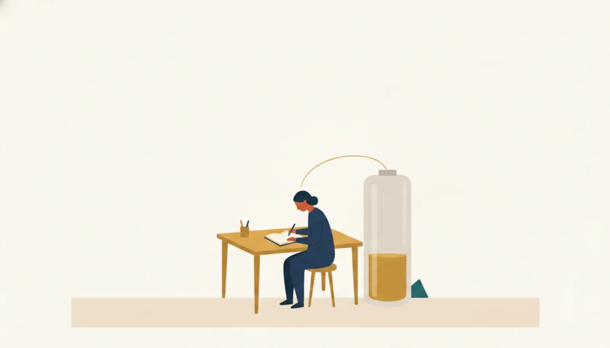
注意力・判断力・意思決定の質は、使い続けると目に見えて落ちる「電池」のような資源。連続稼働で残量が減り、休息で充電される。
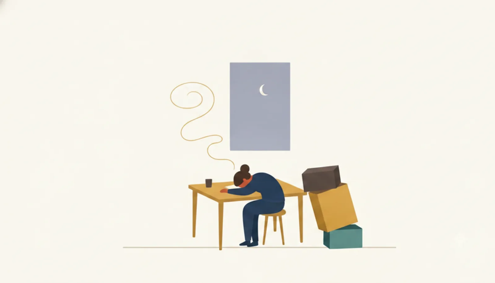
足りない睡眠は“借金”のように積み上がり、集中・記憶・気分をじわじわ削る。本人は慣れて気づきにくいのがやっかいなところ。
人の集中には約90分の波がある。ずっと全開ではいられず、こまめな小休止で波に乗る方が、無理に走り続けるより総量で勝つ。
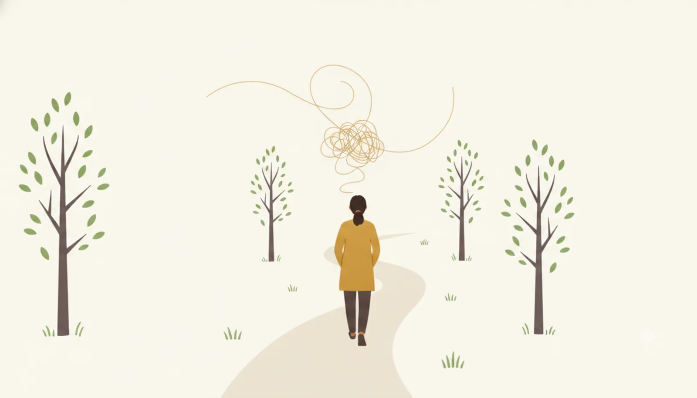
散歩・自然・ぼんやりする時間は、消耗した注意力を回復させる。何もしない時間に、脳は情報を整理し発想をつなぐ。
長期休暇のリフレッシュ効果は、戻ってから数週間で薄れていく。「年1回どかっと」より、効果は長持ちしにくい。
休暇中に仕事から本当に離れられるかが回復の鍵。メールを気にし続けると、休んでいても脳は働き、効果が目減りする。
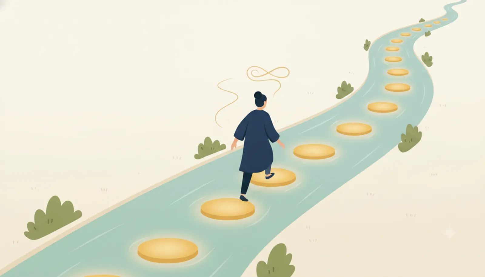
適度な休みを継続的に取る方が、パフォーマンスの谷を作りにくい。休暇は「ご褒美」ではなく「定期メンテナンス」に近い。
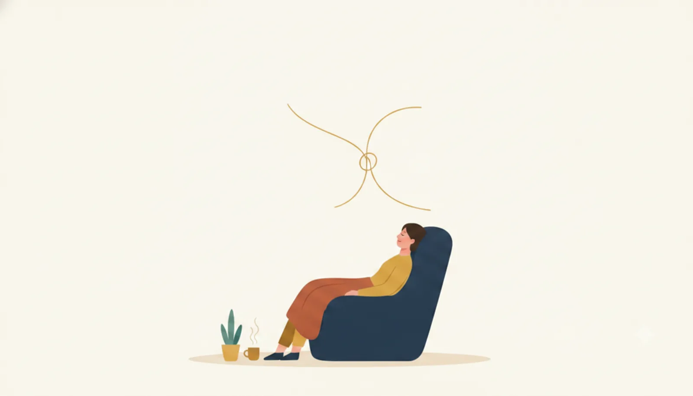
休息後は、離れていた問題が急に解けたり、新しい結びつきが生まれやすい。アイデア勝負の仕事ほど休みが投資になる。
消耗・不調なのに無理に在席している状態。席にはいるが頭は働かず、ミスや手戻りを生む。実は“休んで不在”より高コスト。
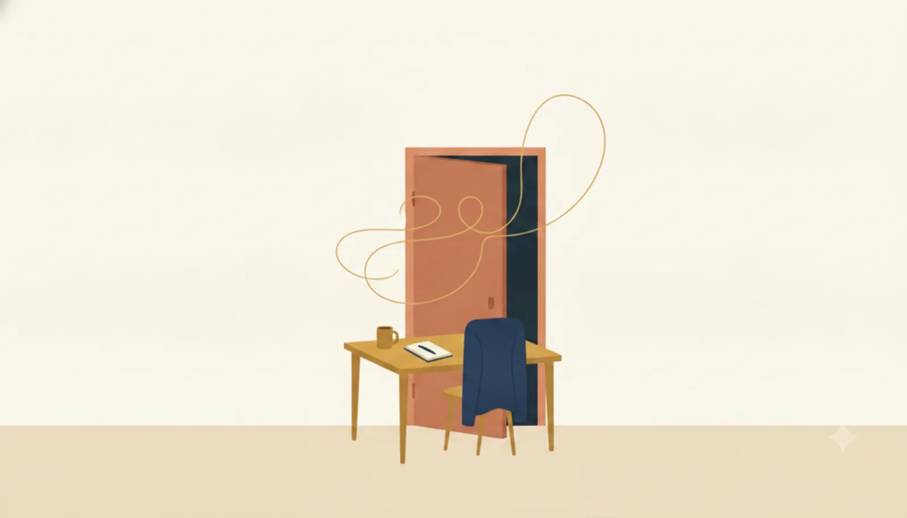
体調を崩して結局まとまって休む状態。無理を重ねた末に起きやすく、短い休みをケチった“ツケ”として現れることがある。
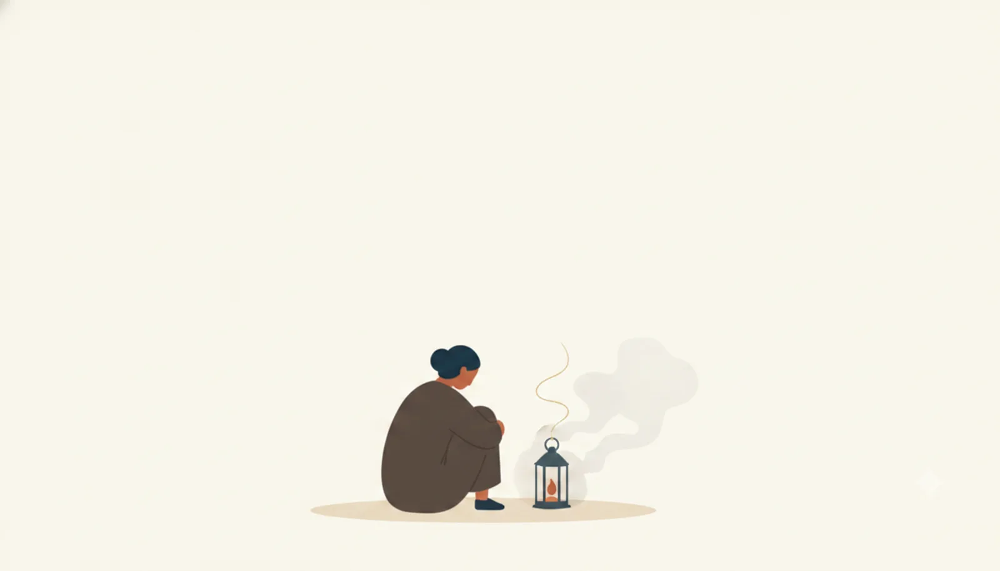
回復のない全力疾走が続くと、意欲・共感・効力感が枯れる。優秀で真面目な人ほど陥りやすく、離職の大きな原因になる。
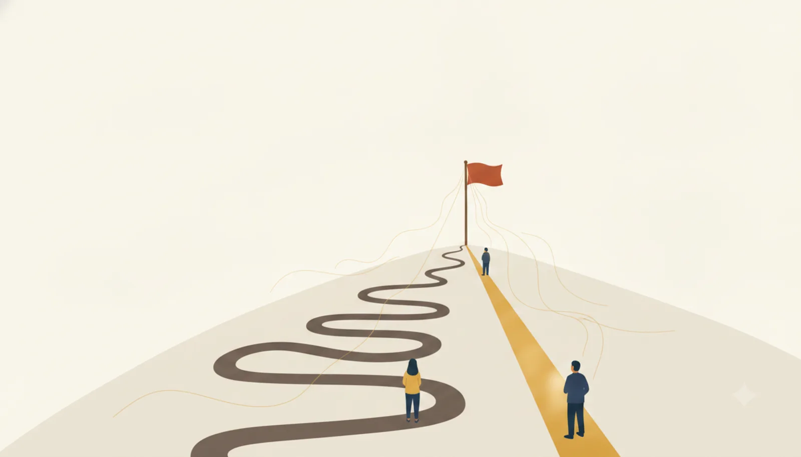
長時間働く国が、必ずしも時間あたりの生産性が高いわけではない。長く働くほど1時間の密度は薄まりうる、という逆説。
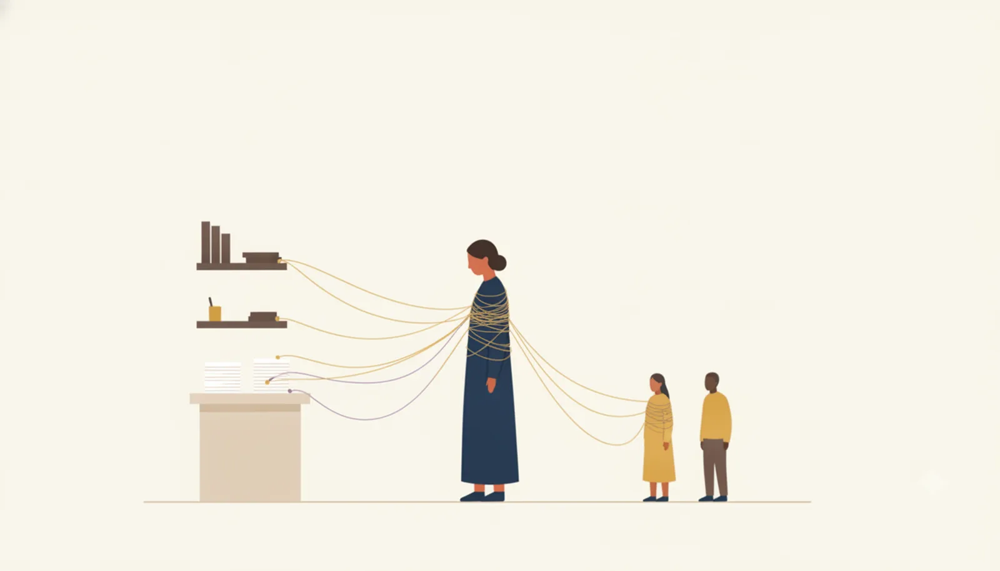
職務を明確に区切らず「会社の一員」として働くため、仕事が個人に張り付く。「その人が休むと代わりがいない」構造を生む。
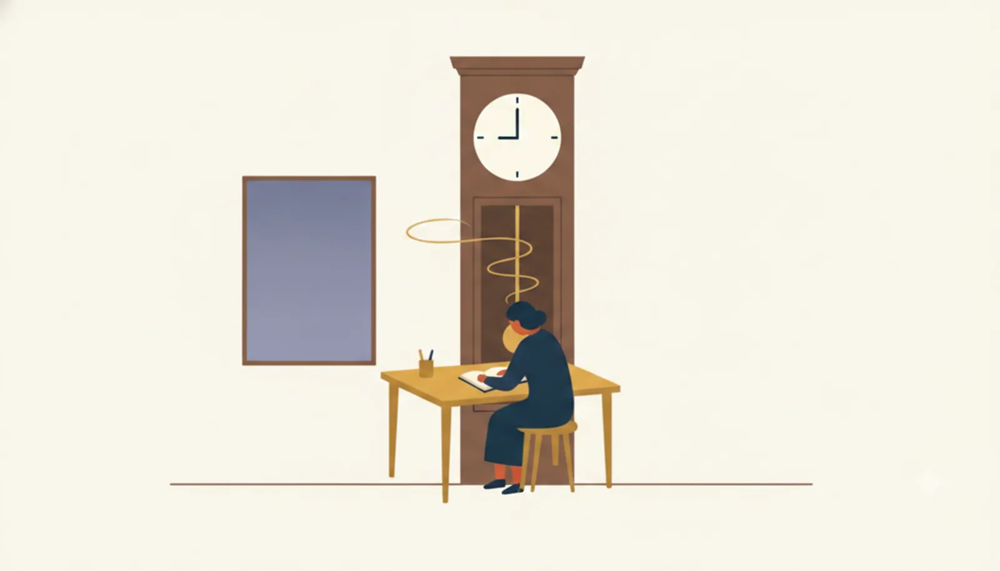
成果だけでなく「その場にいて労力をかける姿勢」が評価されやすい土壌。すると休みは“貢献姿勢の低下”と読まれかねない。
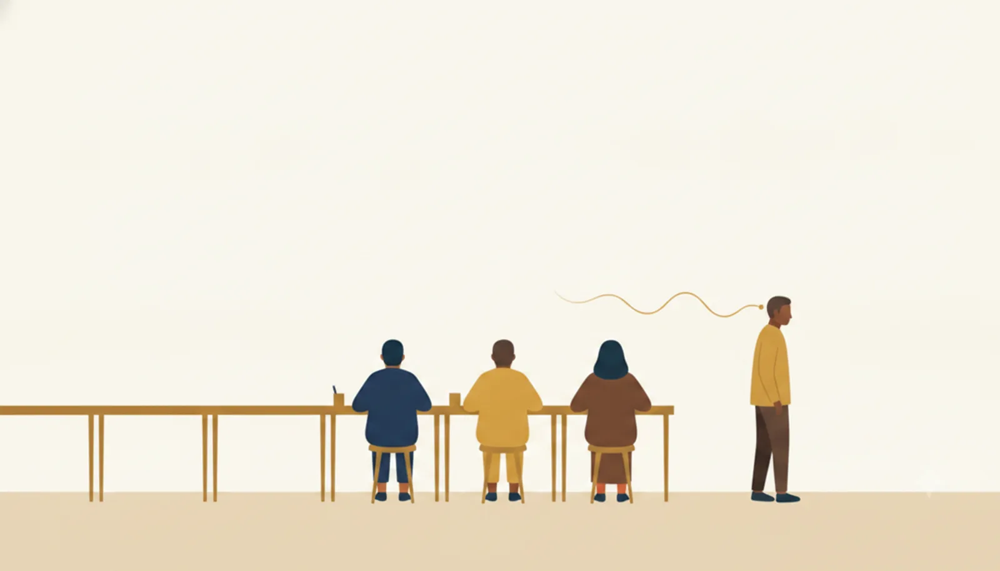
「人に迷惑をかけてはいけない」「周りが休んでいないのに」という空気。権利としては休めるのに、心理的に休みにくい状態。
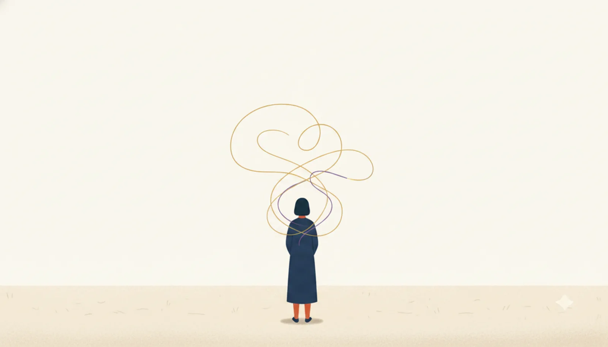
上限をなくすと自由に休めそうだが、基準が消えることで「どこまで休んでいいか」が読めず、かえって取得が減ることがある。
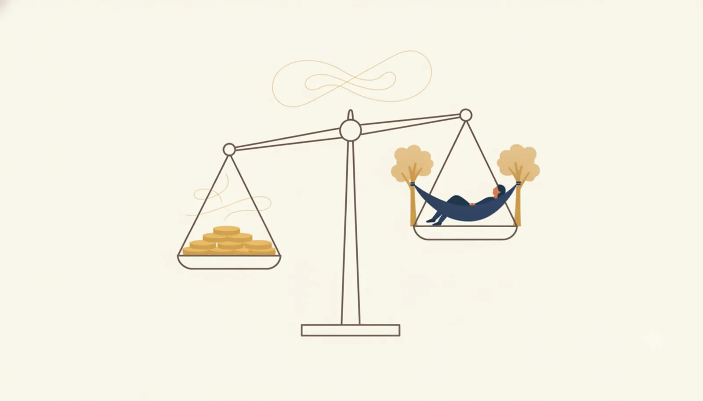
欧州は1970年代以降、生産性の果実を「より多い所得」ではなく「より多い休み」に振り向けた。一人あたりGDPが米国より低めなのは、失敗ではなく選択の面が大きい。
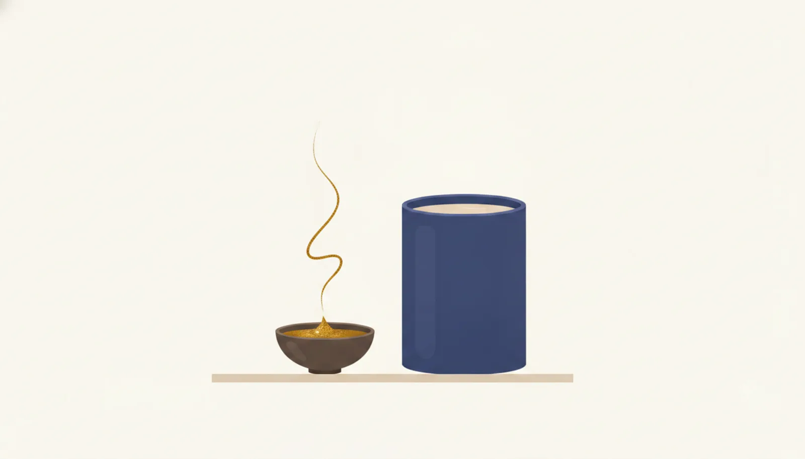
仏・独・北欧は労働時間が短いのに、一時間あたり生産性が非常に高く米国に匹敵する。だから休みを増やしても、産出の落ち込みは素朴な計算ほど大きくならない。
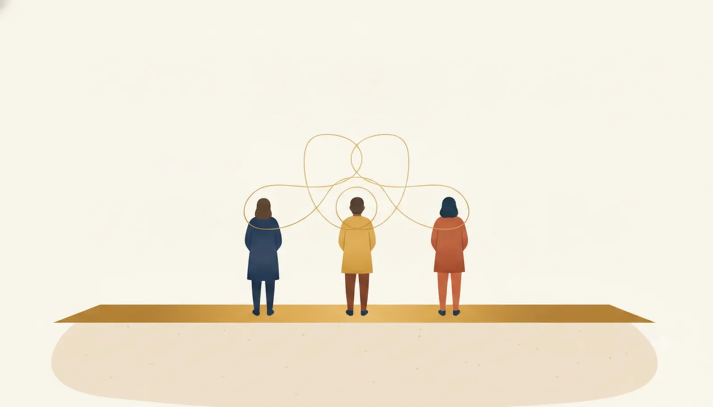
EUは最低4週間の有給休暇という法の“床”を全社に一律に課す（仏は法定5週間）。全員が同じなら「うちだけ休ませると不利」という抜け駆けの心配が消える。
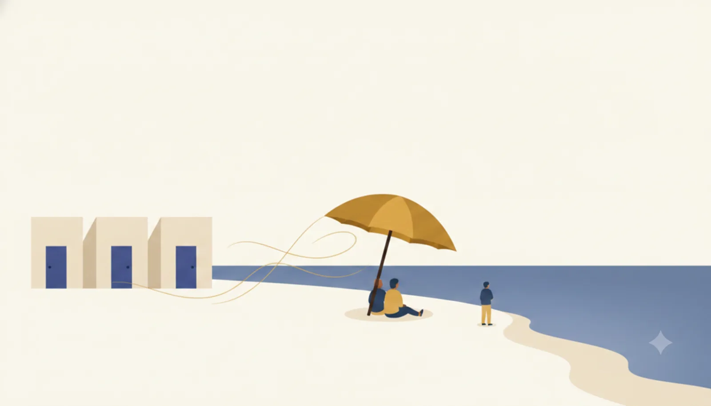
南欧に典型的な「経済ごと止まる夏」。取引先も競合も同時に休むので、「休む間に顧客を奪われる」不安が構造的に小さくなる。
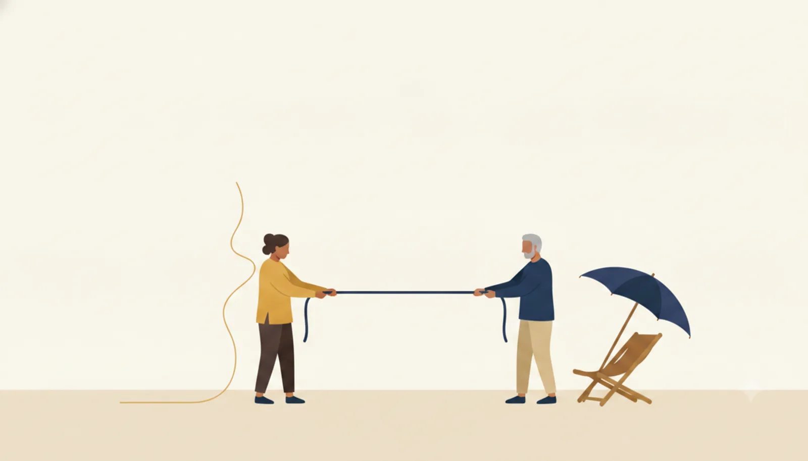
近年、欧州は米国に成長で見劣りし、高齢化も進む。2024年のドラギ報告は緩やかな衰退に警鐘を鳴らし、長い休暇が競争力の重荷では、という議論も噴出している。
並べてみると、「休むと成果が下がる」という思い込みは、人間の脳のしくみ（区分1・2）ともむしろ逆であることが見えてきます。休息は止まる時間ではなく、集中力を充電し、発想を熟成させるメンテナンス時間。削れば本番のパフォーマンスがかえって落ち、プレゼンティーズムや燃え尽きといった“見えないコスト”（区分3）として組織に返ってきます。
それでも日本で休みにくいのは、意志の弱さではなく、仕事の属人化・姿勢を測る評価・同調圧力という三つの生態（区分4）が絡み合っているから。だから近年の休み方改革は「有給を取ろう」と呼びかけるだけでなく、業務の標準化やチーム化、成果ベースの評価といった“構造そのもの”の手入れとセットで語られるようになっています。休みやすさは、根性ではなく設計で作られる ― それがこの図鑑の結論です。
そして国家のスケール（区分5）まで引くと、「1か月の休み」は成長への単純な損失ではなく、生産性の果実を余暇に“両替”するという社会の選択として立ち上がってきます。欧州はその両替を法の床と一斉休業で支え、高い時間あたり生産性で埋め合わせてきました。もっとも、成長 vs 余暇の綱引きは今も決着しておらず、「休みすぎは重荷では」という直感は、欧州自身が抱える現在進行形の論争でもあります。どこで線を引くかは、正解のない価値判断 ― この図鑑は、その判断材料を並べた標本箱です。